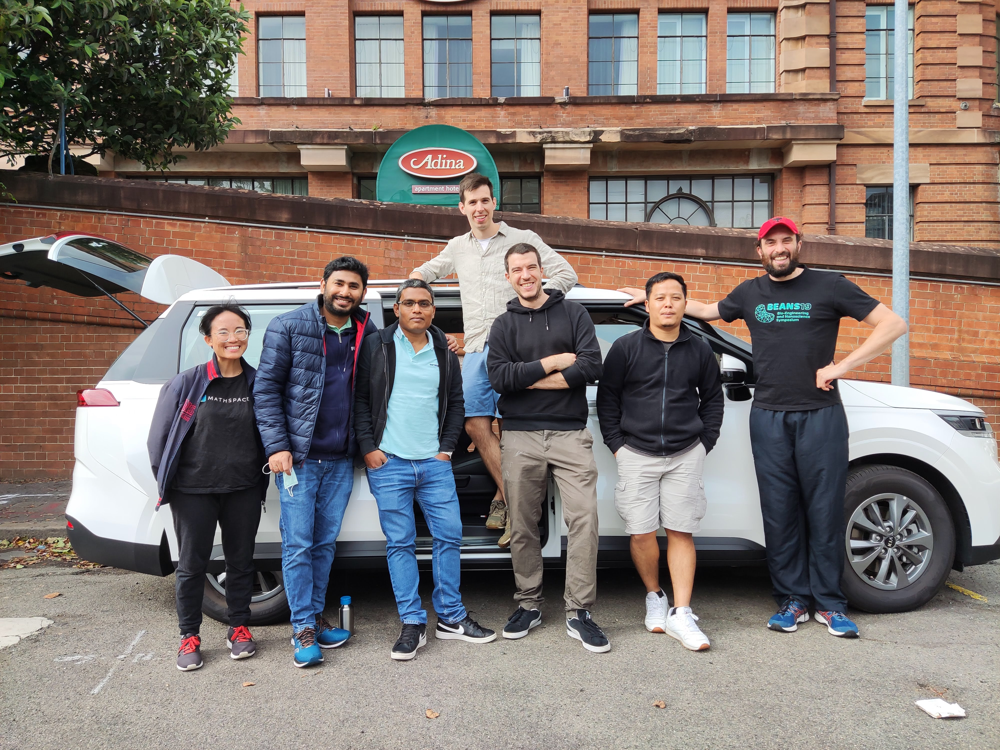
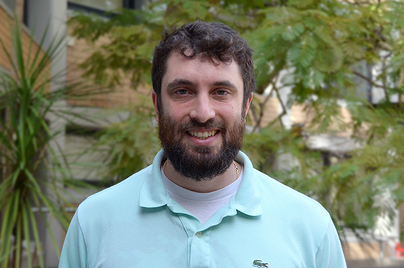

We are a research group in the School of Biotechnology and Biomolecular Science (BABS). We apply biophysical methods in synthetic biology and experimental evolution. Please contact Matt if you are interested in joining or collaborating.
Research
We are interested in complex systems and their origins working among microbiology, biophysics, synthetic biology and evolutionary biology. Roughly half of us work, at the moment, on the bacterial flagellar motor. We use this as a model molecular complex to explore protein engineering, directed and experimental evolution, and to understand better how bacterial swimming has evolved and how we can push it to do new things.
Roughly the other half of us work on ‘bottom-up’ synthetic biology where we try to use insights gleaned from understanding an ancient molecular complex (the motor) to build new nanotechnologies out of simple lipid and DNA components to see how we can increase the complexity step-by-step to create new tools in biosensing and light-activation.
We welcome applications to join our group and have spaces for PhD applicants and postdocs where suitable.
Team

Matt Baker
 Matt completed his DPhil at Oxford University studying the molecular motor that makes many bacteria swim and that is where he first learned to love microbiology where you could work with complex living systems but also put them ‘on ice’ when you needed to. Matt started this group at BABS in 2018, and has a love of radio. For a more detailed profile see Matt’s UNSW profile here or his linkree
Pietro Ridone
Alex Mason
Md Sirajul Islam
Md Imtiazul Islam
Jyoti Gurung
Janelle Ramos
James Gaston
Imogen Kelly
Vibhuti Nandel
Alumni
Gonzalo Peralta (Hons 2016)
Jessica Clark (Hons 2018)
Oskar Jaggers (Hons 2018)
Joon Bae (Hons 2020)
Angela Lin (Biomedical Engineering 2020)
Dr Yu-Wen Lai (Postdoc 2017)
Publications
Preprints
Spontaneous adaptation of ion selectivity in a bacterial flagellar motor
Ridone, Ishida, Lin, Humphreys, Giannoulatou, Sowa, Baker.
bioRxiv
| PDF
| bioRxiv |
2021
Binding of DNA origami to lipids: maximizing yield and switching via strand displacement
Daljit Singh, Darley, Ridone, Gaston, Abbas, Wickham, Baker.
Nucleic Acids Research
| journal |
Fluorescence Approaches for Characterizing Ion Channels in Synthetic Bilayers
Islam, Gaston, Baker.
Membranes
| journal |
Novel Amiloride Derivatives That Inhibit Bacterial Motility across Multiple Strains and Stator Types
Islam, Bae, Ishida, Ridone, Lin, Kelso, Sowa, Buckley, Baker.
Journal of Bacteriology
| journal |
Pushing the super-resolution limit: recent improvements in microscopy below the diffraction limit
Nieves, Baker.
Biochemical Society Transactions
| journal |
Flagellar export apparatus and ATP synthetase: Homology evidenced by synteny predating the Last Universal Common Ancestor
Matzke, Lin, Stone, Baker.
BioEssays
| PDF
| journal |
Earlier publications can be viewed on Matt’s Google Scholar.
Contact
School of Biotechnology and Biomolecular Science
Find us:
Biosciences
Room 301 (Level 3) D26
UNSW Kensington Campus
Send something:
Attention: Matt Baker
BABS
Upper Campus Store E26, Bioscience South
LG018 Loading Dock
Via Gate 11, Botany Street
UNSW Sydney NSW 2052
Australia